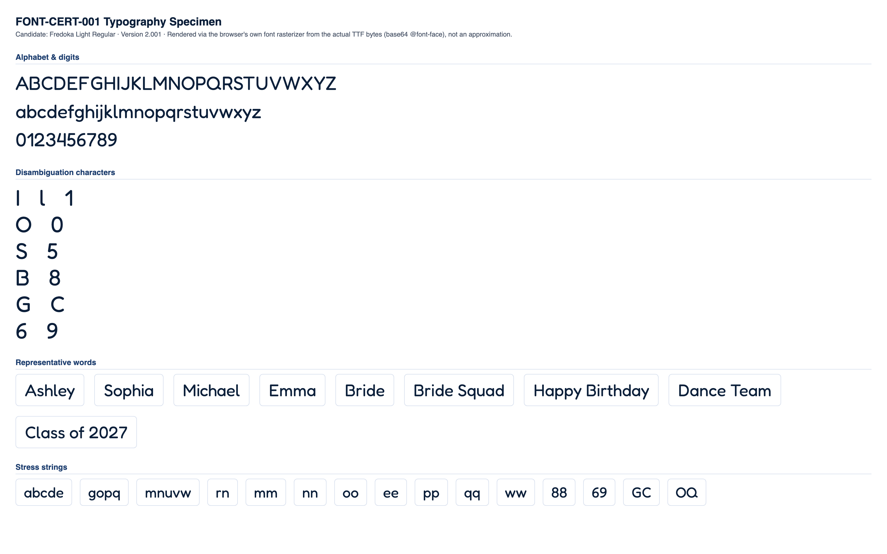

CONDITIONAL PASS
Classification and the feedback below are computed at the mid-range letter height for each stone size (the representative case). Full min/mid/max data is shown in section 4.
No blocking issues found.
Min and max height produce no more collisions or low-stone-count findings than mid height.
Medium
No blocking production failures, but 14 refinement note(s) were found (11 actionable item(s) below) -- readability, spacing, or anatomy concerns that would need addressing for production quality.
| Status | Check | Category | Detail |
|---|---|---|---|
| PASS | Successful TTF parsing | parsing | opentype.js parsed the file without error. |
| PASS | Outline format | structure | TrueType (quadratic) outlines. sfnt signature "0x00010000", opentype.js outlinesFormat="truetype". |
| PASS | Quadratic TrueType outlines | structure | TrueType file with quadratic curves confirmed: 271 curve commands found across 10 sampled glyphs. |
| PASS | unitsPerEm | structure | unitsPerEm = 1000 |
| PASS | Glyph count | structure | 335 glyphs (font.numGlyphs=335). |
| PASS | .notdef at glyph index 0 | structure | .notdef confirmed at glyph index 0. |
| PASS | Unicode cmap coverage | coverage | cmap maps 320 Unicode code point(s) to glyphs. |
| PASS | Required character coverage (A-Z, a-z, 0-9, space, . , ' - ! ?) | coverage | All 69 required characters map to a real glyph (glyph index != 0). |
| PASS | Required sfnt tables | structure | All required tables present: cmap, glyf, head, hhea, hmtx, loca, maxp, name, post, OS/2. |
| PASS | Family / subfamily / version / PostScript naming | naming | family="Fredoka Light", subfamily="Regular", version="Version 2.001", postScriptName="Fredoka-Light". |
| PASS | Ascender, descender, line gap, horizontal metrics | metrics | ascender=974, descender=-236, hhea.lineGap=0, advanceWidthMax=1243, numberOfHMetrics=334 (hmtx table present: true). |
| PASS | Invalid or empty glyphs | geometry | No mapped, non-whitespace, non-invisible-by-design character resolves to an empty outline. |
| PASS | Open contours | geometry | Every required-character contour closes explicitly (an explicit "Z"/closepath command) or implicitly (its final point returns to its starting point). |
| WARNING | Self-intersections | geometry | 18 of 69 character(s) show 45 total crossing(s) (small counts: 1-4 per affected character) -- "A" (self:0, cross-contour:4), "H" (self:0, cross-contour:4), "M" (self:1, cross-contour:0), "R" (self:0, cross-contour:2), "X" (self:0, cross-contour:4), "b" (self:0, cross-contour:2), "d" (self:0, cross-contour:2), "f" (self:0, cross-contour:4), "g" (self:0, cross-contour:4), "p" (self:0, cross-contour:2), "q" (self:0, cross-contour:2), "t" (self:0, cross-contour:4), "x" (self:0, cross-contour:4), "y" (self:0, cross-contour:2), "1" (self:0, cross-contour:1), "6" (self:1, cross-contour:0), "9" (self:1, cross-contour:0), "?" (self:1, cross-contour:0). Not production-blocking on its own (verify visually against rhinestone-specimen.png/typography-specimen.png -- a transversal crossing in the outline does not necessarily produce a visible defect once converted to stones). |
| WARNING | Zero-length or duplicate outline segments | geometry | 68 of 69 character(s) contain 661 raw zero-length draw command(s) total (a command whose endpoint exactly duplicates the current pen position -- draws nothing, harmless no-op, but real source-file redundancy), 0 duplicate outline segments. Not production-blocking: these commands have no visual or geometric effect. Per-character counts: "A" (zero-length:6, duplicate:0), "B" (zero-length:12, duplicate:0), "C" (zero-length:16, duplicate:0), "D" (zero-length:6, duplicate:0), "E" (zero-length:8, duplicate:0), "F" (zero-length:7, duplicate:0), "G" (zero-length:16, duplicate:0), "H" (zero-length:8, duplicate:0), +60 more. |
| PASS | Coordinates outside valid TrueType ranges | geometry | All required-character outline coordinates fall within the signed 16-bit range (-32768 to 32767). |
| PASS | Inconsistent or suspicious advance widths / side bearings | metrics | Advance widths for required characters cluster reasonably around the median (565 units). |
Rendered from the actual source TTF via a base64-embedded @font-face rule (typography), and through the real production pipeline FontManager → OpenTypeProvider → GeometryEngine.generateTextLayout() → StoneLayout (rhinestone), at this milestone's own physical letter-height range per stone size:
| Stone size | Min | Mid (representative) | Max |
|---|---|---|---|
| SS6 | 35mm | 42.5mm | 50mm |
| SS10 | 45mm | 52.5mm | 60mm |
| SS16 | 65mm | 77.5mm | 90mm |
| SS20 | 80mm | 95mm | 110mm |
| SS30 | 106mm | 108.5mm | 111mm |


Successful layout generation (a non-empty StoneLayout with no collisions) is not the same as visual readability -- see each height variant's readability metrics below for objective, threshold-based findings.
| SS6 | text height: 35mm |
|---|---|
| SS10 | text height: 45mm |
| SS16 | text height: 65mm |
| SS20 | text height: 80mm |
| SS30 | text height: 106mm |
| Pair | Size | Stone counts | Chamfer distance | Result |
|---|---|---|---|---|
| "I" vs "l" | SS16 | 11 / 21 | 0.0415 | WARNING |
| "l" vs "1" | SS16 | 21 / 14 | 0.0997 | PASS |
| "I" vs "1" | SS16 | 11 / 14 | 0.1114 | PASS |
| "O" vs "0" | SS16 | 47 / 37 | 0.0609 | WARNING |
| "S" vs "5" | SS16 | 33 / 33 | 0.0415 | WARNING |
| "B" vs "8" | SS16 | 47 / 37 | 0.0550 | WARNING |
| "G" vs "C" | SS16 | 52 / 36 | 0.0499 | WARNING |
| "Q" vs "O" | SS16 | 48 / 47 | 0.0449 | WARNING |
| "e" vs "c" | SS16 | 26 / 20 | 0.0581 | WARNING |
| "e" vs "o" | SS16 | 26 / 24 | 0.0648 | WARNING |
| "c" vs "o" | SS16 | 20 / 24 | 0.0761 | WARNING |
| "6" vs "9" | SS16 | 33 / 31 | 0.0914 | PASS |
Threshold: 0.09 (normalized, unit-height point clouds). Below threshold = flagged as visually similar.
| Char | SS6 | SS10 | SS16 | SS20 | SS30 |
|---|---|---|---|---|---|
| "A" | 35 | 26 | 35 | 38 | 36 |
| "B" | 53 | 43 | 47 | 56 | 50 |
| "C" | 43 | 34 | 36 | 43 | 39 |
| "D" | 58 | 49 | 44 | 61 | 59 |
| "E" | 51 | 36 | 39 | 52 | 42 |
| "F" | 38 | 24 | 36 | 38 | 33 |
| "G" | 58 | 46 | 52 | 59 | 54 |
| "H" | 49 | 46 | 27 | 50 | 50 |
| "I" | 20 | 19 | 11 | 21 | 21 |
| "J" | 29 | 25 | 20 | 31 | 30 |
| "K" | 44 | 30 | 32 | 46 | 40 |
| "L" | 31 | 22 | 22 | 32 | 23 |
| "M" | 55 | 54 | 56 | 56 | 45 |
| "N" | 50 | 31 | 49 | 54 | 51 |
| "O" | 60 | 45 | 47 | 62 | 59 |
| "P" | 48 | 38 | 39 | 49 | 48 |
| "Q" | 64 | 46 | 48 | 66 | 63 |
| "R" | 53 | 40 | 39 | 56 | 47 |
| "S" | 47 | 32 | 33 | 47 | 41 |
| "T" | 35 | 21 | 33 | 35 | 23 |
| "U" | 48 | 37 | 39 | 51 | 50 |
| "V" | 40 | 21 | 21 | 35 | 23 |
| "W" | 62 | 44 | 48 | 58 | 45 |
| "X" | 44 | 25 | 27 | 36 | 47 |
| "Y" | 34 | 24 | 25 | 33 | 29 |
| "Z" | 47 | 35 | 36 | 38 | 37 |
| "a" | 32 | 26 | 29 | 31 | 30 |
| "b" | 35 | 26 | 28 | 34 | 30 |
| "c" | 29 | 18 | 20 | 26 | 24 |
| "d" | 37 | 28 | 30 | 37 | 32 |
| "e" | 31 | 24 | 26 | 29 | 28 |
| "f" | 26 | 16 | 15 | 26 | 19 |
| "g" | 41 | 29 | 30 | 34 | 32 |
| "h" | 36 | 30 | 24 | 36 | 34 |
| "i" | 15 | 9 | 15 | 16 | 10 |
| "j" | 23 | 21 | 22 | 15 | 22 |
| "k" | 32 | 25 | 23 | 25 | 26 |
| "l" | 23 | 20 | 21 | 24 | 23 |
| "m" | 40 | 38 | 40 | 33 | 34 |
| "n" | 28 | 19 | 25 | 29 | 23 |
| "o" | 31 | 22 | 24 | 27 | 26 |
| "p" | 35 | 29 | 32 | 34 | 31 |
| "q" | 35 | 28 | 32 | 35 | 32 |
| "r" | 17 | 12 | 11 | 18 | 13 |
| "s" | 27 | 19 | 20 | 22 | 21 |
| "t" | 23 | 14 | 15 | 24 | 16 |
| "u" | 26 | 20 | 23 | 26 | 25 |
| "v" | 20 | 15 | 16 | 27 | 21 |
| "w" | 40 | 33 | 32 | 36 | 31 |
| "x" | 25 | 23 | 17 | 25 | 16 |
| "y" | 30 | 19 | 17 | 28 | 20 |
| "z" | 30 | 21 | 27 | 22 | 29 |
| "0" | 52 | 37 | 37 | 55 | 45 |
| "1" | 23 | 14 | 14 | 28 | 18 |
| "2" | 48 | 43 | 45 | 47 | 47 |
| "3" | 42 | 30 | 31 | 38 | 35 |
| "4" | 40 | 30 | 23 | 39 | 38 |
| "5" | 44 | 32 | 33 | 45 | 38 |
| "6" | 40 | 32 | 33 | 38 | 36 |
| "7" | 26 | 17 | 27 | 27 | 18 |
| "8" | 49 | 34 | 37 | 45 | 41 |
| "9" | 44 | 30 | 31 | 42 | 36 |
Cell values are stone count per glyph at that stone size ("coll." = colliding stone pairs found).
| Word | SS6 | SS10 | SS16 | SS20 | SS30 |
|---|---|---|---|---|---|
| Ashley | 182 stones, min spacing 2.00mm, 5 cluster(s) | 138 stones, min spacing 2.80mm, 5 cluster(s) | 143 stones, min spacing 4.03mm, 5 cluster(s) | 177 stones, min spacing 4.71mm, 7 cluster(s) | 162 stones, min spacing 6.42mm, 5 cluster(s) |
| Sophia | 196 stones, min spacing 2.01mm, 6 cluster(s) | 148 stones, min spacing 2.84mm, 7 cluster(s) | 157 stones, min spacing 4.00mm, 6 cluster(s) | 191 stones, min spacing 4.71mm, 7 cluster(s) | 172 stones, min spacing 6.43mm, 6 cluster(s) |
| Michael | 221 stones, min spacing 2.00mm, 8 cluster(s) | 181 stones, min spacing 2.81mm, 8 cluster(s) | 191 stones, min spacing 4.02mm, 7 cluster(s) | 218 stones, min spacing 4.72mm, 10 cluster(s) | 194 stones, min spacing 6.41mm, 8 cluster(s) |
| Emma | 163 stones, min spacing 2.01mm, 6 cluster(s) | 138 stones, min spacing 2.81mm, 4 cluster(s) | 148 stones, min spacing 4.01mm, 6 cluster(s) | 149 stones, min spacing 4.72mm, 8 cluster(s) | 140 stones, min spacing 6.48mm, 4 cluster(s) |
| Bride | 153 stones, min spacing 2.00mm, 6 cluster(s) | 116 stones, min spacing 2.80mm, 7 cluster(s) | 129 stones, min spacing 4.02mm, 8 cluster(s) | 156 stones, min spacing 4.72mm, 7 cluster(s) | 133 stones, min spacing 6.40mm, 7 cluster(s) |
| Bride Squad | 330 stones, min spacing 2.00mm, 10 cluster(s) | 250 stones, min spacing 2.80mm, 11 cluster(s) | 276 stones, min spacing 4.01mm, 13 cluster(s) | 332 stones, min spacing 4.71mm, 12 cluster(s) | 293 stones, min spacing 6.40mm, 11 cluster(s) |
| Happy Birthday | 424 stones, min spacing 2.00mm, 13 cluster(s) | 330 stones, min spacing 2.80mm, 13 cluster(s) | 325 stones, min spacing 4.00mm, 17 cluster(s) | 423 stones, min spacing 4.72mm, 17 cluster(s) | 367 stones, min spacing 6.40mm, 17 cluster(s) |
| Dance Team | 316 stones, min spacing 2.00mm, 9 cluster(s) | 245 stones, min spacing 2.84mm, 9 cluster(s) | 272 stones, min spacing 4.01mm, 9 cluster(s) | 304 stones, min spacing 4.70mm, 13 cluster(s) | 279 stones, min spacing 6.41mm, 8 cluster(s) |
| Class of 2027 | 383 stones, min spacing 2.01mm, 11 cluster(s) | 296 stones, min spacing 2.80mm, 12 cluster(s) | 319 stones, min spacing 4.00mm, 12 cluster(s) | 371 stones, min spacing 4.71mm, 11 cluster(s) | 336 stones, min spacing 6.40mm, 12 cluster(s) |
No glyph/size combination falls below the minimum meaningful stone count.
No counter-bearing glyph/size combination falls below the counter-bearing stone-count floor.
| Pair | Size | Chamfer distance | Stone counts |
|---|---|---|---|
| "I" vs "l" | SS6 | 0.0551 | 20 / 23 |
| "I" vs "1" | SS6 | 0.0825 | 20 / 23 |
| "O" vs "0" | SS6 | 0.0517 | 60 / 52 |
| "S" vs "5" | SS6 | 0.0371 | 47 / 44 |
| "B" vs "8" | SS6 | 0.0541 | 53 / 49 |
| "G" vs "C" | SS6 | 0.0524 | 58 / 43 |
| "Q" vs "O" | SS6 | 0.0387 | 64 / 60 |
| "e" vs "c" | SS6 | 0.0682 | 31 / 29 |
| "e" vs "o" | SS6 | 0.0583 | 31 / 31 |
| "c" vs "o" | SS6 | 0.0746 | 29 / 31 |
| "6" vs "9" | SS6 | 0.0716 | 40 / 44 |
| "I" vs "l" | SS10 | 0.0568 | 19 / 20 |
| "I" vs "1" | SS10 | 0.0794 | 19 / 14 |
| "O" vs "0" | SS10 | 0.0648 | 45 / 37 |
| "S" vs "5" | SS10 | 0.0438 | 32 / 32 |
| "B" vs "8" | SS10 | 0.0613 | 43 / 34 |
| "G" vs "C" | SS10 | 0.0535 | 46 / 34 |
| "Q" vs "O" | SS10 | 0.0436 | 46 / 45 |
| "e" vs "c" | SS10 | 0.0685 | 24 / 18 |
| "e" vs "o" | SS10 | 0.0683 | 24 / 22 |
| "c" vs "o" | SS10 | 0.0772 | 18 / 22 |
| "I" vs "l" | SS16 | 0.0415 | 11 / 21 |
| "O" vs "0" | SS16 | 0.0609 | 47 / 37 |
| "S" vs "5" | SS16 | 0.0415 | 33 / 33 |
| "B" vs "8" | SS16 | 0.0550 | 47 / 37 |
| "G" vs "C" | SS16 | 0.0499 | 52 / 36 |
| "Q" vs "O" | SS16 | 0.0449 | 48 / 47 |
| "e" vs "c" | SS16 | 0.0581 | 26 / 20 |
| "e" vs "o" | SS16 | 0.0648 | 26 / 24 |
| "c" vs "o" | SS16 | 0.0761 | 20 / 24 |
| "I" vs "l" | SS20 | 0.0501 | 21 / 24 |
| "O" vs "0" | SS20 | 0.0528 | 62 / 55 |
| "S" vs "5" | SS20 | 0.0366 | 47 / 45 |
| "B" vs "8" | SS20 | 0.0530 | 56 / 45 |
| "G" vs "C" | SS20 | 0.0528 | 59 / 43 |
| "Q" vs "O" | SS20 | 0.0357 | 66 / 62 |
| "e" vs "c" | SS20 | 0.0858 | 29 / 26 |
| "e" vs "o" | SS20 | 0.0622 | 29 / 27 |
| "c" vs "o" | SS20 | 0.0860 | 26 / 27 |
| "6" vs "9" | SS20 | 0.0757 | 38 / 42 |
| "I" vs "l" | SS30 | 0.0552 | 21 / 23 |
| "O" vs "0" | SS30 | 0.0506 | 59 / 45 |
| "S" vs "5" | SS30 | 0.0410 | 41 / 38 |
| "B" vs "8" | SS30 | 0.0531 | 50 / 41 |
| "G" vs "C" | SS30 | 0.0516 | 54 / 39 |
| "Q" vs "O" | SS30 | 0.0362 | 63 / 59 |
| "e" vs "c" | SS30 | 0.0801 | 28 / 24 |
| "e" vs "o" | SS30 | 0.0595 | 28 / 26 |
| "c" vs "o" | SS30 | 0.0876 | 24 / 26 |
| "6" vs "9" | SS30 | 0.0789 | 36 / 36 |
| Size | Diameter | Scale | Rendered stone size | Result |
|---|---|---|---|---|
| SS6 | 2mm | 5px/mm | 10px | PASS |
| SS10 | 2.8mm | 4px/mm | 11.2px | PASS |
| SS16 | 4mm | 3.5px/mm | 14px | PASS |
| SS20 | 4.7mm | 3px/mm | 14.1px | PASS |
| SS30 | 6.4mm | 2.5px/mm | 16px | PASS |
| SS6 | text height: 42.5mm |
|---|---|
| SS10 | text height: 52.5mm |
| SS16 | text height: 77.5mm |
| SS20 | text height: 95mm |
| SS30 | text height: 108.5mm |
| Pair | Size | Stone counts | Chamfer distance | Result |
|---|---|---|---|---|
| "I" vs "l" | SS16 | 24 / 27 | 0.0511 | WARNING |
| "l" vs "1" | SS16 | 27 / 32 | 0.1252 | PASS |
| "I" vs "1" | SS16 | 24 / 32 | 0.0998 | PASS |
| "O" vs "0" | SS16 | 71 / 62 | 0.0488 | WARNING |
| "S" vs "5" | SS16 | 56 / 53 | 0.0363 | WARNING |
| "B" vs "8" | SS16 | 78 / 64 | 0.0482 | WARNING |
| "G" vs "C" | SS16 | 67 / 51 | 0.0472 | WARNING |
| "Q" vs "O" | SS16 | 75 / 71 | 0.0447 | WARNING |
| "e" vs "c" | SS16 | 46 / 37 | 0.0557 | WARNING |
| "e" vs "o" | SS16 | 46 / 48 | 0.0439 | WARNING |
| "c" vs "o" | SS16 | 37 / 48 | 0.0613 | WARNING |
| "6" vs "9" | SS16 | 59 / 59 | 0.0574 | WARNING |
Threshold: 0.09 (normalized, unit-height point clouds). Below threshold = flagged as visually similar.
| Char | SS6 | SS10 | SS16 | SS20 | SS30 |
|---|---|---|---|---|---|
| "A" | 61 | 51 | 54 | 62 | 41 |
| "B" | 82 | 74 | 78 | 81 | 52 |
| "C" | 54 | 48 | 51 | 54 | 45 |
| "D" | 73 | 65 | 70 | 74 | 61 |
| "E" | 64 | 56 | 61 | 63 | 52 |
| "F" | 48 | 42 | 45 | 47 | 39 |
| "G" | 71 | 64 | 67 | 73 | 59 |
| "H" | 63 | 54 | 58 | 62 | 51 |
| "I" | 26 | 22 | 24 | 25 | 21 |
| "J" | 37 | 34 | 35 | 37 | 30 |
| "K" | 57 | 50 | 54 | 58 | 47 |
| "L" | 40 | 36 | 37 | 41 | 34 |
| "M" | 82 | 72 | 77 | 82 | 57 |
| "N" | 74 | 67 | 69 | 73 | 51 |
| "O" | 73 | 66 | 71 | 75 | 64 |
| "P" | 59 | 53 | 55 | 59 | 49 |
| "Q" | 77 | 70 | 75 | 79 | 67 |
| "R" | 67 | 60 | 64 | 68 | 53 |
| "S" | 60 | 53 | 56 | 59 | 43 |
| "T" | 44 | 38 | 40 | 43 | 36 |
| "U" | 59 | 54 | 57 | 61 | 51 |
| "V" | 52 | 46 | 49 | 52 | 42 |
| "W" | 93 | 76 | 85 | 90 | 57 |
| "X" | 59 | 50 | 54 | 58 | 40 |
| "Y" | 43 | 39 | 41 | 44 | 27 |
| "Z" | 57 | 52 | 56 | 58 | 37 |
| "a" | 52 | 42 | 47 | 52 | 31 |
| "b" | 57 | 45 | 49 | 53 | 32 |
| "c" | 39 | 35 | 37 | 40 | 26 |
| "d" | 56 | 46 | 50 | 53 | 32 |
| "e" | 54 | 44 | 46 | 54 | 28 |
| "f" | 33 | 30 | 31 | 34 | 17 |
| "g" | 67 | 53 | 59 | 69 | 41 |
| "h" | 50 | 43 | 46 | 50 | 34 |
| "i" | 21 | 17 | 18 | 20 | 16 |
| "j" | 31 | 27 | 29 | 31 | 24 |
| "k" | 47 | 41 | 44 | 45 | 26 |
| "l" | 28 | 26 | 27 | 29 | 15 |
| "m" | 68 | 54 | 60 | 65 | 42 |
| "n" | 42 | 35 | 38 | 41 | 24 |
| "o" | 49 | 44 | 48 | 50 | 27 |
| "p" | 56 | 44 | 48 | 52 | 34 |
| "q" | 53 | 45 | 48 | 52 | 34 |
| "r" | 25 | 20 | 22 | 22 | 18 |
| "s" | 41 | 28 | 38 | 41 | 22 |
| "t" | 32 | 28 | 30 | 33 | 18 |
| "u" | 44 | 36 | 38 | 42 | 27 |
| "v" | 35 | 31 | 33 | 35 | 17 |
| "w" | 61 | 44 | 53 | 60 | 41 |
| "x" | 37 | 32 | 34 | 36 | 25 |
| "y" | 39 | 34 | 37 | 40 | 18 |
| "z" | 44 | 39 | 42 | 45 | 35 |
| "0" | 63 | 58 | 62 | 65 | 54 |
| "1" | 34 | 30 | 32 | 33 | 15 |
| "2" | 64 | 58 | 62 | 64 | 50 |
| "3" | 57 | 52 | 56 | 59 | 38 |
| "4" | 49 | 44 | 47 | 51 | 44 |
| "5" | 55 | 49 | 53 | 56 | 40 |
| "6" | 61 | 54 | 59 | 61 | 39 |
| "7" | 41 | 30 | 39 | 41 | 20 |
| "8" | 72 | 61 | 64 | 72 | 48 |
| "9" | 61 | 52 | 59 | 62 | 38 |
Cell values are stone count per glyph at that stone size ("coll." = colliding stone pairs found).
| Word | SS6 | SS10 | SS16 | SS20 | SS30 |
|---|---|---|---|---|---|
| Ashley | 273 stones, min spacing 2.02mm, 7 cluster(s) | 226 stones, min spacing 2.81mm, 6 cluster(s) | 248 stones, min spacing 4.00mm, 6 cluster(s) | 276 stones, min spacing 4.72mm, 6 cluster(s) | 158 stones, min spacing 6.43mm, 7 cluster(s) |
| Sophia | 288 stones, min spacing 2.02mm, 9 cluster(s) | 243 stones, min spacing 2.81mm, 7 cluster(s) | 263 stones, min spacing 4.05mm, 7 cluster(s) | 283 stones, min spacing 4.78mm, 7 cluster(s) | 185 stones, min spacing 6.41mm, 7 cluster(s) |
| Michael | 326 stones, min spacing 2.02mm, 10 cluster(s) | 279 stones, min spacing 2.80mm, 7 cluster(s) | 298 stones, min spacing 4.00mm, 8 cluster(s) | 327 stones, min spacing 4.72mm, 8 cluster(s) | 207 stones, min spacing 6.43mm, 7 cluster(s) |
| Emma | 252 stones, min spacing 2.01mm, 4 cluster(s) | 206 stones, min spacing 2.80mm, 4 cluster(s) | 228 stones, min spacing 4.04mm, 4 cluster(s) | 245 stones, min spacing 4.75mm, 4 cluster(s) | 167 stones, min spacing 6.41mm, 6 cluster(s) |
| Bride | 238 stones, min spacing 2.02mm, 7 cluster(s) | 201 stones, min spacing 2.81mm, 6 cluster(s) | 214 stones, min spacing 4.00mm, 6 cluster(s) | 230 stones, min spacing 4.70mm, 8 cluster(s) | 146 stones, min spacing 6.43mm, 6 cluster(s) |
| Bride Squad | 503 stones, min spacing 2.01mm, 12 cluster(s) | 423 stones, min spacing 2.80mm, 12 cluster(s) | 453 stones, min spacing 4.00mm, 12 cluster(s) | 488 stones, min spacing 4.70mm, 14 cluster(s) | 313 stones, min spacing 6.41mm, 12 cluster(s) |
| Happy Birthday | 623 stones, min spacing 2.02mm, 16 cluster(s) | 522 stones, min spacing 2.81mm, 21 cluster(s) | 566 stones, min spacing 4.02mm, 16 cluster(s) | 609 stones, min spacing 4.70mm, 19 cluster(s) | 387 stones, min spacing 6.43mm, 21 cluster(s) |
| Dance Team | 478 stones, min spacing 2.01mm, 10 cluster(s) | 399 stones, min spacing 2.80mm, 10 cluster(s) | 431 stones, min spacing 4.00mm, 9 cluster(s) | 475 stones, min spacing 4.75mm, 9 cluster(s) | 307 stones, min spacing 6.41mm, 10 cluster(s) |
| Class of 2027 | 530 stones, min spacing 2.02mm, 11 cluster(s) | 450 stones, min spacing 2.82mm, 11 cluster(s) | 505 stones, min spacing 4.01mm, 14 cluster(s) | 535 stones, min spacing 4.75mm, 11 cluster(s) | 353 stones, min spacing 6.41mm, 15 cluster(s) |
No glyph/size combination falls below the minimum meaningful stone count.
No counter-bearing glyph/size combination falls below the counter-bearing stone-count floor.
| Pair | Size | Chamfer distance | Stone counts |
|---|---|---|---|
| "I" vs "l" | SS6 | 0.0487 | 26 / 28 |
| "O" vs "0" | SS6 | 0.0495 | 73 / 63 |
| "S" vs "5" | SS6 | 0.0364 | 60 / 55 |
| "B" vs "8" | SS6 | 0.0451 | 82 / 72 |
| "G" vs "C" | SS6 | 0.0484 | 71 / 54 |
| "Q" vs "O" | SS6 | 0.0412 | 77 / 73 |
| "e" vs "c" | SS6 | 0.0616 | 54 / 39 |
| "e" vs "o" | SS6 | 0.0536 | 54 / 49 |
| "c" vs "o" | SS6 | 0.0617 | 39 / 49 |
| "6" vs "9" | SS6 | 0.0581 | 61 / 61 |
| "I" vs "l" | SS10 | 0.0498 | 22 / 26 |
| "I" vs "1" | SS10 | 0.0847 | 22 / 30 |
| "O" vs "0" | SS10 | 0.0476 | 66 / 58 |
| "S" vs "5" | SS10 | 0.0364 | 53 / 49 |
| "B" vs "8" | SS10 | 0.0500 | 74 / 61 |
| "G" vs "C" | SS10 | 0.0570 | 64 / 48 |
| "Q" vs "O" | SS10 | 0.0445 | 70 / 66 |
| "e" vs "c" | SS10 | 0.0671 | 44 / 35 |
| "e" vs "o" | SS10 | 0.0606 | 44 / 44 |
| "c" vs "o" | SS10 | 0.0617 | 35 / 44 |
| "6" vs "9" | SS10 | 0.0630 | 54 / 52 |
| "I" vs "l" | SS16 | 0.0511 | 24 / 27 |
| "O" vs "0" | SS16 | 0.0488 | 71 / 62 |
| "S" vs "5" | SS16 | 0.0363 | 56 / 53 |
| "B" vs "8" | SS16 | 0.0482 | 78 / 64 |
| "G" vs "C" | SS16 | 0.0472 | 67 / 51 |
| "Q" vs "O" | SS16 | 0.0447 | 75 / 71 |
| "e" vs "c" | SS16 | 0.0557 | 46 / 37 |
| "e" vs "o" | SS16 | 0.0439 | 46 / 48 |
| "c" vs "o" | SS16 | 0.0613 | 37 / 48 |
| "6" vs "9" | SS16 | 0.0574 | 59 / 59 |
| "I" vs "l" | SS20 | 0.0472 | 25 / 29 |
| "O" vs "0" | SS20 | 0.0502 | 75 / 65 |
| "S" vs "5" | SS20 | 0.0345 | 59 / 56 |
| "B" vs "8" | SS20 | 0.0456 | 81 / 72 |
| "G" vs "C" | SS20 | 0.0523 | 73 / 54 |
| "Q" vs "O" | SS20 | 0.0429 | 79 / 75 |
| "e" vs "c" | SS20 | 0.0689 | 54 / 40 |
| "e" vs "o" | SS20 | 0.0560 | 54 / 50 |
| "c" vs "o" | SS20 | 0.0639 | 40 / 50 |
| "6" vs "9" | SS20 | 0.0580 | 61 / 62 |
| "I" vs "l" | SS30 | 0.0783 | 21 / 15 |
| "O" vs "0" | SS30 | 0.0489 | 64 / 54 |
| "S" vs "5" | SS30 | 0.0409 | 43 / 40 |
| "B" vs "8" | SS30 | 0.0549 | 52 / 48 |
| "G" vs "C" | SS30 | 0.0560 | 59 / 45 |
| "Q" vs "O" | SS30 | 0.0355 | 67 / 64 |
| "e" vs "c" | SS30 | 0.0643 | 28 / 26 |
| "e" vs "o" | SS30 | 0.0589 | 28 / 27 |
| "c" vs "o" | SS30 | 0.0740 | 26 / 27 |
| "6" vs "9" | SS30 | 0.0766 | 39 / 38 |
| Size | Diameter | Scale | Rendered stone size | Result |
|---|---|---|---|---|
| SS6 | 2mm | 5px/mm | 10px | PASS |
| SS10 | 2.8mm | 4px/mm | 11.2px | PASS |
| SS16 | 4mm | 3.5px/mm | 14px | PASS |
| SS20 | 4.7mm | 3px/mm | 14.1px | PASS |
| SS30 | 6.4mm | 2.5px/mm | 16px | PASS |
| SS6 | text height: 50mm |
|---|---|
| SS10 | text height: 60mm |
| SS16 | text height: 90mm |
| SS20 | text height: 110mm |
| SS30 | text height: 111mm |
| Pair | Size | Stone counts | Chamfer distance | Result |
|---|---|---|---|---|
| "I" vs "l" | SS16 | 29 / 32 | 0.0509 | WARNING |
| "l" vs "1" | SS16 | 32 / 37 | 0.1240 | PASS |
| "I" vs "1" | SS16 | 29 / 37 | 0.0957 | PASS |
| "O" vs "0" | SS16 | 82 / 72 | 0.0515 | WARNING |
| "S" vs "5" | SS16 | 66 / 62 | 0.0333 | WARNING |
| "B" vs "8" | SS16 | 91 / 82 | 0.0463 | WARNING |
| "G" vs "C" | SS16 | 82 / 60 | 0.0486 | WARNING |
| "Q" vs "O" | SS16 | 87 / 82 | 0.0403 | WARNING |
| "e" vs "c" | SS16 | 61 / 44 | 0.0673 | WARNING |
| "e" vs "o" | SS16 | 61 / 55 | 0.0528 | WARNING |
| "c" vs "o" | SS16 | 44 / 55 | 0.0618 | WARNING |
| "6" vs "9" | SS16 | 69 / 70 | 0.0547 | WARNING |
Threshold: 0.09 (normalized, unit-height point clouds). Below threshold = flagged as visually similar.
| Char | SS6 | SS10 | SS16 | SS20 | SS30 |
|---|---|---|---|---|---|
| "A" | 74 | 64 | 70 | 73 | 37 |
| "B" | 97 | 84 | 91 | 97 | 58 |
| "C" | 64 | 55 | 60 | 63 | 47 |
| "D" | 86 | 75 | 81 | 86 | 63 |
| "E" | 75 | 65 | 70 | 73 | 54 |
| "F" | 56 | 50 | 54 | 59 | 40 |
| "G" | 85 | 76 | 82 | 85 | 59 |
| "H" | 74 | 65 | 72 | 74 | 54 |
| "I" | 30 | 26 | 29 | 30 | 22 |
| "J" | 44 | 37 | 43 | 43 | 31 |
| "K" | 67 | 59 | 66 | 67 | 49 |
| "L" | 48 | 41 | 43 | 46 | 35 |
| "M" | 98 | 80 | 90 | 94 | 61 |
| "N" | 88 | 77 | 81 | 86 | 53 |
| "O" | 86 | 76 | 82 | 86 | 64 |
| "P" | 70 | 62 | 66 | 68 | 50 |
| "Q" | 92 | 80 | 87 | 93 | 68 |
| "R" | 81 | 71 | 77 | 79 | 57 |
| "S" | 69 | 61 | 66 | 69 | 51 |
| "T" | 52 | 45 | 47 | 50 | 37 |
| "U" | 70 | 62 | 67 | 71 | 53 |
| "V" | 62 | 53 | 59 | 61 | 34 |
| "W" | 113 | 96 | 104 | 106 | 54 |
| "X" | 70 | 60 | 64 | 68 | 50 |
| "Y" | 53 | 47 | 50 | 52 | 29 |
| "Z" | 71 | 61 | 65 | 69 | 42 |
| "a" | 64 | 54 | 59 | 62 | 33 |
| "b" | 70 | 60 | 64 | 71 | 39 |
| "c" | 48 | 40 | 44 | 46 | 27 |
| "d" | 71 | 61 | 65 | 73 | 37 |
| "e" | 64 | 55 | 61 | 63 | 29 |
| "f" | 40 | 35 | 38 | 40 | 27 |
| "g" | 83 | 69 | 75 | 80 | 41 |
| "h" | 60 | 52 | 58 | 60 | 39 |
| "i" | 26 | 20 | 22 | 23 | 10 |
| "j" | 39 | 32 | 34 | 36 | 16 |
| "k" | 57 | 47 | 51 | 55 | 34 |
| "l" | 34 | 31 | 32 | 34 | 25 |
| "m" | 80 | 67 | 72 | 79 | 38 |
| "n" | 50 | 44 | 46 | 50 | 25 |
| "o" | 58 | 51 | 55 | 58 | 32 |
| "p" | 70 | 59 | 63 | 70 | 37 |
| "q" | 70 | 60 | 64 | 72 | 36 |
| "r" | 29 | 25 | 26 | 28 | 19 |
| "s" | 49 | 43 | 46 | 49 | 23 |
| "t" | 39 | 33 | 36 | 38 | 25 |
| "u" | 52 | 45 | 47 | 51 | 32 |
| "v" | 42 | 38 | 40 | 40 | 23 |
| "w" | 76 | 62 | 67 | 71 | 41 |
| "x" | 46 | 38 | 42 | 43 | 25 |
| "y" | 49 | 41 | 45 | 47 | 34 |
| "z" | 55 | 48 | 48 | 51 | 38 |
| "0" | 76 | 67 | 72 | 76 | 57 |
| "1" | 40 | 36 | 37 | 40 | 26 |
| "2" | 76 | 67 | 71 | 76 | 51 |
| "3" | 70 | 60 | 65 | 69 | 43 |
| "4" | 63 | 53 | 60 | 60 | 41 |
| "5" | 67 | 55 | 62 | 64 | 47 |
| "6" | 73 | 64 | 69 | 73 | 44 |
| "7" | 49 | 43 | 45 | 48 | 26 |
| "8" | 85 | 74 | 82 | 85 | 52 |
| "9" | 73 | 64 | 70 | 73 | 44 |
Cell values are stone count per glyph at that stone size ("coll." = colliding stone pairs found).
| Word | SS6 | SS10 | SS16 | SS20 | SS30 |
|---|---|---|---|---|---|
| Ashley | 330 stones, min spacing 2.02mm, 6 cluster(s) | 286 stones, min spacing 2.81mm, 6 cluster(s) | 312 stones, min spacing 4.01mm, 6 cluster(s) | 326 stones, min spacing 4.83mm, 6 cluster(s) | 187 stones, min spacing 6.40mm, 7 cluster(s) |
| Sophia | 347 stones, min spacing 2.01mm, 7 cluster(s) | 297 stones, min spacing 2.82mm, 9 cluster(s) | 323 stones, min spacing 4.00mm, 8 cluster(s) | 342 stones, min spacing 4.71mm, 10 cluster(s) | 202 stones, min spacing 6.40mm, 7 cluster(s) |
| Michael | 394 stones, min spacing 2.01mm, 8 cluster(s) | 332 stones, min spacing 2.82mm, 10 cluster(s) | 366 stones, min spacing 4.00mm, 9 cluster(s) | 382 stones, min spacing 4.79mm, 10 cluster(s) | 224 stones, min spacing 6.40mm, 10 cluster(s) |
| Emma | 299 stones, min spacing 2.00mm, 4 cluster(s) | 253 stones, min spacing 2.86mm, 7 cluster(s) | 273 stones, min spacing 4.04mm, 7 cluster(s) | 293 stones, min spacing 4.70mm, 5 cluster(s) | 163 stones, min spacing 6.41mm, 6 cluster(s) |
| Bride | 287 stones, min spacing 2.00mm, 7 cluster(s) | 245 stones, min spacing 2.80mm, 7 cluster(s) | 265 stones, min spacing 4.01mm, 6 cluster(s) | 284 stones, min spacing 4.71mm, 7 cluster(s) | 153 stones, min spacing 6.41mm, 8 cluster(s) |
| Bride Squad | 613 stones, min spacing 2.00mm, 13 cluster(s) | 526 stones, min spacing 2.80mm, 13 cluster(s) | 566 stones, min spacing 4.00mm, 12 cluster(s) | 611 stones, min spacing 4.71mm, 14 cluster(s) | 342 stones, min spacing 6.41mm, 13 cluster(s) |
| Happy Birthday | 762 stones, min spacing 2.00mm, 15 cluster(s) | 648 stones, min spacing 2.80mm, 17 cluster(s) | 704 stones, min spacing 4.01mm, 17 cluster(s) | 751 stones, min spacing 4.71mm, 20 cluster(s) | 450 stones, min spacing 6.40mm, 15 cluster(s) |
| Dance Team | 572 stones, min spacing 2.00mm, 10 cluster(s) | 489 stones, min spacing 2.80mm, 12 cluster(s) | 530 stones, min spacing 4.10mm, 13 cluster(s) | 561 stones, min spacing 4.73mm, 11 cluster(s) | 314 stones, min spacing 6.41mm, 12 cluster(s) |
| Class of 2027 | 635 stones, min spacing 2.02mm, 12 cluster(s) | 556 stones, min spacing 2.83mm, 12 cluster(s) | 595 stones, min spacing 4.17mm, 13 cluster(s) | 631 stones, min spacing 4.76mm, 12 cluster(s) | 395 stones, min spacing 6.40mm, 13 cluster(s) |
No glyph/size combination falls below the minimum meaningful stone count.
No counter-bearing glyph/size combination falls below the counter-bearing stone-count floor.
| Pair | Size | Chamfer distance | Stone counts |
|---|---|---|---|
| "I" vs "l" | SS6 | 0.0458 | 30 / 34 |
| "O" vs "0" | SS6 | 0.0506 | 86 / 76 |
| "S" vs "5" | SS6 | 0.0323 | 69 / 67 |
| "B" vs "8" | SS6 | 0.0440 | 97 / 85 |
| "G" vs "C" | SS6 | 0.0471 | 85 / 64 |
| "Q" vs "O" | SS6 | 0.0413 | 92 / 86 |
| "e" vs "c" | SS6 | 0.0571 | 64 / 48 |
| "e" vs "o" | SS6 | 0.0515 | 64 / 58 |
| "c" vs "o" | SS6 | 0.0517 | 48 / 58 |
| "6" vs "9" | SS6 | 0.0532 | 73 / 73 |
| "I" vs "l" | SS10 | 0.0452 | 26 / 31 |
| "O" vs "0" | SS10 | 0.0513 | 76 / 67 |
| "S" vs "5" | SS10 | 0.0350 | 61 / 55 |
| "B" vs "8" | SS10 | 0.0443 | 84 / 74 |
| "G" vs "C" | SS10 | 0.0473 | 76 / 55 |
| "Q" vs "O" | SS10 | 0.0438 | 80 / 76 |
| "e" vs "c" | SS10 | 0.0600 | 55 / 40 |
| "e" vs "o" | SS10 | 0.0564 | 55 / 51 |
| "c" vs "o" | SS10 | 0.0603 | 40 / 51 |
| "6" vs "9" | SS10 | 0.0567 | 64 / 64 |
| "I" vs "l" | SS16 | 0.0509 | 29 / 32 |
| "O" vs "0" | SS16 | 0.0515 | 82 / 72 |
| "S" vs "5" | SS16 | 0.0333 | 66 / 62 |
| "B" vs "8" | SS16 | 0.0463 | 91 / 82 |
| "G" vs "C" | SS16 | 0.0486 | 82 / 60 |
| "Q" vs "O" | SS16 | 0.0403 | 87 / 82 |
| "e" vs "c" | SS16 | 0.0673 | 61 / 44 |
| "e" vs "o" | SS16 | 0.0528 | 61 / 55 |
| "c" vs "o" | SS16 | 0.0618 | 44 / 55 |
| "6" vs "9" | SS16 | 0.0547 | 69 / 70 |
| "I" vs "l" | SS20 | 0.0473 | 30 / 34 |
| "O" vs "0" | SS20 | 0.0505 | 86 / 76 |
| "S" vs "5" | SS20 | 0.0319 | 69 / 64 |
| "B" vs "8" | SS20 | 0.0450 | 97 / 85 |
| "G" vs "C" | SS20 | 0.0506 | 85 / 63 |
| "Q" vs "O" | SS20 | 0.0414 | 93 / 86 |
| "e" vs "c" | SS20 | 0.0629 | 63 / 46 |
| "e" vs "o" | SS20 | 0.0545 | 63 / 58 |
| "c" vs "o" | SS20 | 0.0587 | 46 / 58 |
| "6" vs "9" | SS20 | 0.0547 | 73 / 73 |
| "I" vs "l" | SS30 | 0.0537 | 22 / 25 |
| "O" vs "0" | SS30 | 0.0514 | 64 / 57 |
| "S" vs "5" | SS30 | 0.0369 | 51 / 47 |
| "B" vs "8" | SS30 | 0.0552 | 58 / 52 |
| "G" vs "C" | SS30 | 0.0499 | 59 / 47 |
| "Q" vs "O" | SS30 | 0.0476 | 68 / 64 |
| "e" vs "c" | SS30 | 0.0731 | 29 / 27 |
| "e" vs "o" | SS30 | 0.0617 | 29 / 32 |
| "c" vs "o" | SS30 | 0.0810 | 27 / 32 |
| "6" vs "9" | SS30 | 0.0726 | 44 / 44 |
| Size | Diameter | Scale | Rendered stone size | Result |
|---|---|---|---|---|
| SS6 | 2mm | 5px/mm | 10px | PASS |
| SS10 | 2.8mm | 4px/mm | 11.2px | PASS |
| SS16 | 4mm | 3.5px/mm | 14px | PASS |
| SS20 | 4.7mm | 3px/mm | 14.1px | PASS |
| SS30 | 6.4mm | 2.5px/mm | 16px | PASS |
x-height measured spread: 9.0 font units across 13 letters (declared OS/2 sxHeight: 500). Cap-height measured spread: 10.0 font units across 26 letters (declared OS/2 sCapHeight: 700).
Visual-weight outliers (fill-ratio vs a-z median 0.347): "a" (1.324), "b" (0.967), "d" (0.967), "e" (0.765), "g" (1.043), "o" (1.261), "p" (1.001), "q" (1.000).
No baseline anomalies found across a-z.
All 5 tested word-space boundaries measure at least 1.3× the median intra-word letter gap (tightest: "Dance Team" between "e" and "T" at 3.04×) -- no word-space is flagged as reading like an ordinary letter gap.
| File size | 155.5 KB |
|---|---|
| sfnt signature | 0x00010000 |
| Outline format | truetype |
| unitsPerEm | 1000 |
| Glyph count | 335 |
| cmap entries | 320 |
| Tables present | GDEF, GPOS, GSUB, HVAR, OS/2, STAT, cmap, fvar, gasp, glyf, gvar, head, hhea, hmtx, loca, maxp, name, post, prep |
| Family / Subfamily | Fredoka Light / Regular |
| Version | Version 2.001 |
| PostScript name | Fredoka-Light |
| Ascender / Descender | 974 / -236 |
| Line gap | 0 |
| sxHeight / sCapHeight | 500 / 700 |
| Italic angle | 0 |
| Fixed pitch | no |
| Curve vs line commands (sample) | 271 curve / 147 line (10 glyphs) |